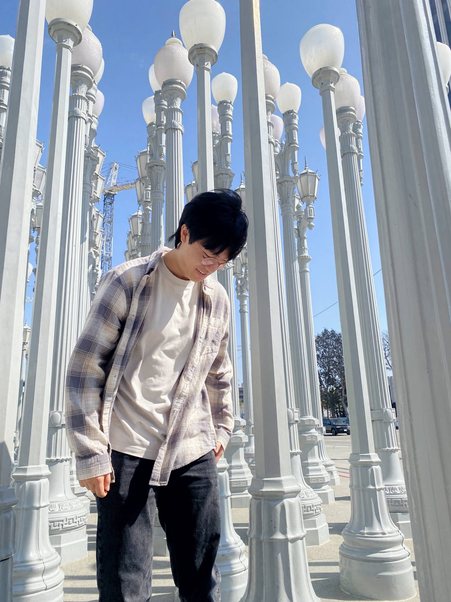

Justin Baek
I am a Washington native, but currently studying Civil Engineering with an
emphasis in Building Science at the University of Southern California.
Visiting open houses during my spare time and traveling to the urbanized
country of Singapore are just a couple influences that prompted me to
pursue Civil Engineering. Although I am not far into my studies, I
have developed interests in many disciplines related to construction
such as architecture, structural engineering, and real estate. I believe
that connecting all these fields of study will broaden our perspective of
the structured, creative, and esthetic world in both the natural and built
environment. Outside of studying, my life is comprised of producing music,
exploring the city, and playing the trumpet.